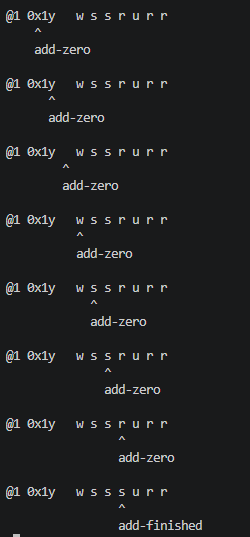

1. 计算机器
计算机器(computing machine)是模拟人的计算行为的机器。图灵并没有真正在物理上设计出这样的机器，但却构想出了这种机器的所有逻辑。
计算机器包含以下设计：
- 纸带(tape)：首先计算机器有一个可以读写的纸带，纸带被分隔成一个个的格子(square)，这些格子有2种类型：
- F-格(F-square)：写入数字，F-格中所有的数字组成最终的计算结果
- E-格(E-square)：写入可能会被擦除的辅助字符
- 字符(symbol)：每个格子只能写入一个字符，包括数字和辅助字符；
- 扫描符(scanned symbol)：机器每次只能扫描纸带中的一个格子，被扫描的格子称为扫描格(scanned square)，扫描格中的字符称为扫描符
- 配置(m-configurations)：机器只能处理有限的条件，比如$q_1,q_2,\cdots,q_n$，这些条件称为配置。配置规定了机器可能的操作(operations)，包括：
- 在扫描格中写入新字符
- 擦除扫描格中的字符
- 变换扫描格(左移、右移)
- 格局(configuration)：配置和扫描符的组合称为格局，配置和扫描符一起决定了机器的操作和新配置。
- 完全格局(complete configuration)：在某个时刻，纸带的完全状态：
- 当前的扫描格
- 纸带上所有的字符
- 当前的配置
- 行动(moves)：机器从一个完全格局转换到另一个完全格局
上述的这种计算机器有两种可能的类型：
- 循环机(circular machine)：在达到某个配置后，不能够再有行动；或者即使有行动，也不能再写入数字
- 非循环机(circle-free machine)：可以一直写入数字
2. 计算机器示例
下面的示例中，计算机器将用配置表来定义。配置表包含4列：
- 配置：即当前配置，用哥特式德文字母表示，如$\frak b, c , k, q, f\cdots$
- 扫描符：None代表空格；如果什么都没有表示无论扫描符是什么都将执行操作
- 操作：当前配置对应的机器操作
- P表示写入，后跟写入字符，比如P0表示写入字符0
- R表示右移
- L表示左移
- E表示擦除
- 新配置：表示执行操作之后机器转入的下一个配置
注意：下面计算数字的例子中图灵机只实现了计算小数部分，省略了前面的整数部分和小数点。
2.1 计算1/3
$\frac{1}{3}$的二进制为$0.01010101...$
| 配置 | 扫描符 | 操作 | 新配置 |
|---|---|---|---|
| $\frak{b}$ | None | P0 | $\frak{b}$ |
| 0 | R,R,P1 | ||
| 1 | R,R,P0 |
2.2 计算1/4
$\frac{1}{4}$的二进制为$0.01000...$
| 配置 | 扫描符 | 操作 | 新配置 |
|---|---|---|---|
| $\frak{b}$ | None | P0 | $\frak{b}$ |
| 0 | R,R,P1 | $\frak{b}$ | |
| 1 | R,R,P0 | $\frak{c}$ | |
| $\frak{c}$ | 0 | R,R,P0 | $\frak{c}$ |
2.3 计算无理数(无限不循环小数)
$0.0010110111011110...$每2个0之间的1的数量递增
| 配置 | 扫描符 | 操作 | 新配置 |
|---|---|---|---|
| $\frak{b}$ | P@,R,P@,R,P0,R,R,P0,L,L | $\frak{o}$ | |
| $\frak{o}$ | 1 | R,Px,L,L,L,P1 | $\frak{o}$ |
| 0 | $\frak{q}$ | ||
| $\frak{q}$ | any(0 or 1) | R,R | $\frak{q}$ |
| none | P1,L | $\frak{p}$ | |
| $\frak{p}$ | x | E,R | $\frak{q}$ |
| @ | R | $\frak{f}$ | |
| none | L,L | $\frak{p}$ | |
| $\frak{f}$ | any(0 or 1) | R,R | $\frak{f}$ |
| none | P0,L,L | $\frak{o}$ |
该机器在计算过程中的完全格局可以表示如下：
$$ \begin{aligned} & \mathfrak{\textcolor{red}b}\kern{0.5em}: \\ &@\kern{0.5em}@\mathfrak{\textcolor{red}o}0\kern{1.5em}0 :\\ &@\kern{0.5em}@\mathfrak{\textcolor{red}q}0\kern{1.5em}0 :\\ &@\kern{0.5em}@\kern{0.5em}0\kern{1em}\mathfrak{\textcolor{red}q}0:\\ &@\kern{0.5em}@\kern{0.5em}0\kern{1.5em}0\kern{1em}\mathfrak{\textcolor{red}q}\kern{0.5em}: \\ &@\kern{0.5em}@\kern{0.5em}0\kern{1.5em}0\mathfrak{\textcolor{red}p}\kern{1em}1:\\ &@\kern{0.5em}@\kern{0.5em}0\mathfrak{\textcolor{red}p}\kern{1em}0\kern{1.5em}1:\\ &@\mathfrak{\textcolor{red}p}@\kern{0.5em}0\kern{1.5em}0\kern{1.5em}1:\\ &@\kern{0.5em}@\,\mathfrak{\textcolor{red}f}0\kern{1.5em}0\kern{1.5em}1: \\ &@\kern{0.5em}@\kern{0.5em}0\,\mathfrak{\textcolor{red}f}\kern{1em}0\kern{1.5em}1:\\ &@\kern{0.5em}@\kern{0.5em}0\kern{1.5em}0\,\mathfrak{\textcolor{red}f}\kern{1em}1:\\ &@\kern{0.5em}@\kern{0.5em}0\kern{1.5em}0\kern{1.5em}1\kern{1em}\mathfrak{\textcolor{red}f}\kern{0.5em}:\\ &@\kern{0.5em}@\kern{0.5em}0\kern{1.5em}0\kern{1em}\mathfrak{\textcolor{red}o}1\kern{1.5em}0:\\ &@\kern{0.5em}@\kern{0.5em}0\kern{1em}\mathfrak{\textcolor{red}o}0\kern{1.5em}1\kern{0.5em} x\kern{0.5em}0:\\ &@\kern{0.5em}@\kern{0.5em}0\kern{1em}\mathfrak{\textcolor{red}q}0\kern{1.5em}1\kern{0.5em}x\kern{0.5em}0:\\ &@\kern{0.5em}@\kern{0.5em}0\kern{1.5em}0\kern{1em}\mathfrak{\textcolor{red}q}1\kern{0.5em}x\kern{0.5em}0:\\ &@\kern{0.5em}@\kern{0.5em}0\kern{1.5em}0\kern{1.5em}1\kern{0.5em}x\mathfrak{\textcolor{red}q}0: \\ &@\kern{0.5em}@\kern{0.5em}0\kern{1.5em}0\kern{1.5em}1\kern{0.5em}x\kern{0.5em}0\kern{1em}\mathfrak{\textcolor{red}q}\kern{0.5em}:\\ &@\kern{0.5em}@\kern{0.5em}0\kern{1.5em}0\kern{1.5em}1\kern{0.5em}x\kern{0.5em}0\mathfrak{\textcolor{red}p}\kern{1em}1:\\ \end{aligned} $$
- 完全格局中的配置放在扫描符的左边；
- 每个完全格局以":"结束
注意：最后一个完全格局中的$x$是E-格中的辅助字符，用来标记其左边的数字$1$
2.4 二进制运算
这部分并未出现在图灵的论文中，是Charles Petzold所著的《图灵的秘密：他的生平、思想及论文解读》 2(杨卫东 等, 2012)一书中补充的例子。如果只想了解图灵最初的设计，可以跳过。
二进制加法和开方运算的图灵机实现(点击展开)
为了更易读，这部分的配置用英语词汇来命名。
2.4.1 二进制加法
从0开始，每次加1，向左进位。（这是本文中唯一一个向左扩展纸带的图灵机）
| 配置 | 扫描符 | 操作 | 新配置 |
|---|---|---|---|
| begin | P0 | increment | |
| increment | 0 | P1 | rewind |
| 1 | P0,L | increment | |
| none | P1 | rewind | |
| rewind | none | L | increment |
| else | R | rewind |
2.4.2 计算$\sqrt{2}$的二进制
这里使用乘法运算来推断$\sqrt{2}$的二进制。
假设已经求出前3位是1.01，那么具体步骤如下：
- 假设第4位是1，这一位就是要求的位，称之为"未知位"
- 将加入未知位后的数自乘，即$1.011\times1.011$；
- 如果自乘结果有$2\times4-1=7$位，那么假设是成立的，未知位就是1
- 如果自乘结果有$2\times4=8$位，那么假设是不成立的，未知位为0
其中原理来自乘法运算的一个规律：$n$位的二进制数自乘，如果不需要进位，那么其结果就只有$2n-1$位；如果结果有$2n$位，那么就要进位，整体结果就会超过2。
到这里，整体来看，实现算法不算太难。而且单位二进制的乘法甚至比加法还简单一点，只有2种可能的结果(0，1)。但是多位数自乘就复杂很多。 我们手算乘法的时候，要将第二个乘数的每一位分别与第一个乘数相乘，然后计算相乘结果的和。$n$位数和$m$位相乘，就要做$n\times m$次的单位乘法。这些乘法的结果要按位数排列，最终还要相加得到最后的乘积。所以，多位乘法里面包含了加法。
$$ \begin{aligned} &1011 \\ \times &1011 \\ ---&--- \\ &1011 \\ 1&011 \\ 00&00 \\ 101&1 \\ ---&--- \\ 111&1001 \end{aligned} $$
Charles的方案是：
- 用x和y来标记每次单位相乘的两个数字位，因为这里是自乘，所以单位相乘的有时是同一个数字位，这时候用z来标记该数字位。
- y标记先不动，x标记从低位往高位移动，这样依次计算x和y的单位相乘，直到x到达最高位，完成一轮单位相乘之后，再将y往前移一位，x重置到最低位，进行下一轮单位相乘。
-
用3种符号来记录乘法过程中产生的和的结果，称之为过程和：
- 加和前，r表示0，u表示1，这两个就是过程和的初始符号；
- 与单位相乘的结果相加后，s表示0，v表示1
- 该位结果已确定、不再参与加和运算后，t表示0，w表示1
- 过程和低位在左边、高位在右边(因为纸带是从左至右读写的，这样方便查找过程和中的位)，这样每次向过程和中加入单位相乘的结果时，只用对最左边的r或u进行进行加和就行了。因为其他符号都代表已经加和过了或者不用再参与运算了。如此便避免了混乱。
- 每一轮自乘运算(即假设未知位后，将假设数自乘，确定结果是否需要进位)之前，根据当前的位数$n$(包括未知位)，标记$2n-1$位的初始过程和(都为r)。自乘运算过程中，如果过程和需要用到这$2n-1$位之外的格子，那么就代表需要进位，也就是假设不成立，未知位为0。

| 配置 | 扫描符 | 操作 | 新配置 | 备注 |
|---|---|---|---|---|
| begin | None | P@,R,P1 | new | 在开头2格写入@和1(第1位不用计算就可以确定是1) |
| new | @ | R | mark-digits | 回到开头@格开始标记数字位的个数 |
| else | L | new | ||
| mark-digits | 0 | R,Px,R | mark-digits | 用x标记所有数字位(0或1)； 用z标记未知位, 并在下一个E-格写入r表示过程和最低位 |
| 1 | R,Px,R | mark-digits | ||
| None | R,Pz,R,R,Pr | find-x | ||
| find-x | x | E | first-r | 擦除x标记 |
| @ | N | find-digits | ||
| else | L,L | find-x | ||
| first-r | r | R,R | last-r | 找到第一个r，即过程和最低位 |
| else | R,R | first-r | ||
| last-r | r | R,R | last-r | 在第一个r后的2个E-格中分别都写入r； 与find-x配置组合成循环：每擦除1个x就在后面增加2个r 最终r的个数就是2n+1 |
| None | Pr,R,R,Pr | find-x | ||
| find-digits | @ | R,R | find-1st-digit | x都擦除完后，从@格开始往后查找要进行单位相乘的数字位 |
| else | L,L | find-digits | ||
| find-1st-digit | x | L | found-1st-digit | 单位相乘：x标记的数字*y标记的数字； 或者，z标记的数字自乘 所以这里先找到被标记的数作为单位相乘的第1位 |
| y | L | found-1st-digit | ||
| z | L | found-3nd-digit | ||
| None | R,R | find-1st-digit | ||
| find-2nd-digit | x | L | found-3nd-digit | 找到另一个x或y标记，作为单位相乘的第2位 |
| y | L | found-3nd-digit | ||
| None | R,R | find-3nd-digit | ||
| found-1st-digit | 0 | R | add-zero | 如果第一位是0，那么相乘结果为0，将过程和+0； 如果是1，则要看第2位是什么 |
| 1 | R,R,R | find-3nd-digit | ||
| found-3nd-digit | 0 | R | add-zero | 如果被z标记的是空格，即未知位需要自乘， 那么直接将过程和+1，因为未知位假设为1 如果不是未知位，那么0自乘+0、1自乘+1 |
| 1 | R | add-one | ||
| None | R | add-one | ||
| add-zero | r | Ps | add-finished | 记录过程和加0的结果，r变s、u变v |
| u | Pv | add-finished | ||
| else | R,R | add-zero | ||
| add-one | r | Pv | add-finished | 记录过程和加1的结果，r变成v、u变成s代表+1 u变成s后还要移到过程和的下一位准备进位 |
| u | Ps,R,R | carry | ||
| else | R,R | add-one | ||
| carry | r | Pu | add-finished | 记录过程和进位结果，r变成u，进位结束；u变成r，继续进位； 如果没有位了，那就代表未知位大了，假设不成立，未知位为0 |
| None | Pu | new-digit-is-zero | ||
| u | Pr,R,R | carry | ||
| add-finished | @ | R,R | erase-old-x | 回到@格，准备擦除旧标记 |
| else | L,L | add-finished | ||
| erase-old-x | x | E,L,L | print-new-x | 擦除x或将z变成y，并移到上一个E-格，准备将x移动到前一位 |
| z | Py,L,L | print-new-x | ||
| else | R,R | erase-old-x | ||
| print-new-x | @ | R,R | erase-old-y | y变成x或将新数字位标记上x |
| y | Pz | find-digits | ||
| None | Px | find-digits | ||
| erase-old-y | y | E,L,L | print-new-y | 被y标记的数字位与所有数字位都相乘后，即本轮单位相乘结束后 将y移动到前一位，准备开始下一轮单位相乘 |
| else | R,R | erase-old-y | ||
| print-new-y | @ | R | new-digit-is-one | 如果前面E-格中是@，那么本轮自乘运算结束，假设成立，未知位是1 否则，将上一个数字位标记上y |
| else | Py,R | reset-new-x | ||
| reset-new-x | None | R,Px | flag-result-digits | 标记y移位后，x要重置，即移到最低位——未知位 |
| else | R,R | reset-new-x | ||
| flag-result-digits | s | Pt,R,R | unflag-result-digits | 标记y移位且x重置之后，过程和的最低位要变符号 s变成t、v变成w，代表这个位不会再参与下面的计算 |
| v | Pw,R,R | unflag-result-digits | ||
| else | R,R | flag-result-digits | ||
| unflag-result-digits | s | Pr,R,R | unflag-result-digits | 其他位需要继续参加计算，所以要换回初始符号 |
| v | Pu,R,R | unflag-result-digits | ||
| else | N | find-digits | ||
| new-digit-is-zero | @ | R | print-zero-digit | 如果未知位是0，回到第1位，准备在未知位写入0 |
| else | L | new-digit-is-zero | ||
| print-zero-digit | 0 | R,E,R | print-zero-digit | 在未知位写入0，寻找未知位的过程中擦除所有数字位标记 |
| 1 | R,E,R | print-zero-digit | ||
| None | P0,R,R,R | cleanup | ||
| new-digit-is-one | @ | R | print-one-digit | 如果未知位是1，准备在未知位写入1 |
| else | L | new-digit-is-one | ||
| print-one-digit | 0 | R,E,R | print-one-digit | 未知位写入完成后，准备擦除过程和标记 |
| 1 | R,E,R | print-one-digit | ||
| None | P1,R,R,R | cleanup | ||
| cleanup | None | N | new | 擦除过程和标记，并准备计算下一个未知位 |
| else | E,R,R | cleanup |
3. 缩略表
有些基本配置，在所有图灵机中几乎是通用的，比如查找、复制、对比等。图灵用缩略表(abbreviated tables)的形式来定义这些通用配置，从而使它们能够被复用。 缩略表中包含大写的德文字母和小写的希腊字母。它们本质上是"变量"。将每个大写德文字母用配置替代，并将每个小写希腊字母用字符替代，就得到了前面那种形式的配置表，现在称之为完全配置表(与"缩略表"相对)。
下面的缩略表中出现的大写德文字母包括：$\frak{C,B,A,E}$。每个字母代表的配置不是一定的，重要的是它的位置，比如经过$\frak{f}(\frak{C,B},\alpha)$，查找到第一个$\alpha$之后转到$\frak{C}$。这只代表转到 $\frak{f}$的第一个参数所代表的配置。比如后面$\frak{C}$的位置会被$\frak{e}(\frak{C,B},\alpha)$这样的配置代替，变成$\frak f\Big(e(C,B,\alpha),B,\alpha\Big)$。那转到的就是$\frak{e}(\frak{C,B},\alpha)$。 而另一类参数，即小写的希腊字母，包括：$\alpha, \beta$，代表的不是配置，而是图灵机读写的字符。同样，它们的指代也不是一定的，它们只代表在参数序列相应位置上出现的字符。 这也就是为什么图灵说它们本质上只是"变量"，大写德文字母是配置变量，小写希腊字母是字符变量。 还有，在缩略表中，配置与新配置相同的情况就代表重复执行当前操作，直到扫描符有所改变。
下面是图灵定义的一些缩略表，在后面搭建通用机的时候会用到。在我的Turing Machine中也实现了这些配置。 缩略表中这些带有"变量"的配置，图灵之后称其为m-函数(m-functions)。 图灵论文中的缩略表有一些错误，这里根据Donald3的建议进行了修改。
| m-函数 | 扫描符 | 操作 | 新配置 | 备注 |
|---|---|---|---|---|
| $\frak{f(C,B,\alpha)}$ | @ | L | $\frak f_1(C,B,\alpha)$ | $\frak f(C,B,\alpha) \begin{cases} 找到第一个\alpha\rightarrow\frak{C} \\ 没找到\alpha\rightarrow\frak{B},-3 \end{cases}$ |
| not @ | L | $\frak f(C,B,\alpha)$ | ||
| $\frak f_1(C,B,\alpha)$ | $\alpha$ | $\frak{C}$ | ||
| not $\alpha$ | R | $\frak f_1(C,B,\alpha)$ | ||
| None | R | $\frak f_2(C,B,\alpha)$ | ||
| $\frak f_2(C,B,\alpha)$ | $\alpha$ | $\frak{C}$ | ||
| not $\alpha$ | R | $\frak f_1(C,B,\alpha)$ | ||
| None | R | $\frak B$ | ||
| $\frak e(C,B,\alpha)$ | $\frak f\Big(e_1(C,B,\alpha),B,\alpha\Big)$ | $\frak e(C,B,\alpha)
\begin{cases}
删除第一个\alpha\rightarrow\frak{C} \\
没找到\alpha\rightarrow\frak{B},-3
\end{cases}$ $\frak{e}(\frak{B},a)$删除所有$a\rightarrow\frak{B},-3$ |
||
| $\frak e_1(C,B,\alpha)$ | E | $\frak C$ | ||
| $\frak e(B,\alpha)$ | $\frak e\Big(e(B,\alpha),B,\alpha\Big)$ | |||
| $\frak pe(C,\beta)$ | $\frak f\Big(pe_1(C,\beta),C,@\Big)$ | $\mathfrak{pe(C,\beta)}在末尾打印字符\beta\rightarrow\mathfrak{C},0(新打印的字符)$ | ||
| $\frak pe_1(C,\beta)$ | Any | R,R | $\frak pe_1(C,\beta)$ | |
| None | P$\beta$ | $\frak{C}$ | ||
| $\frak l(C)$ | L | $\frak C$ | $\frak c(C,B,\alpha) \begin{cases} 将第一个被\alpha标记的字符\beta复制到末尾\rightarrow\frak C \\ 没找到\alpha\rightarrow\frak B, -3 \end{cases}$ | |
| $\frak r(C)$ | R | $\frak C$ | ||
| $\frak f'(C,B,\alpha)$ | $\frak f\Big(l(C),B,\alpha\Big)$ | |||
| $\frak f''(C,B,\alpha)$ | $\frak f\Big(r(C),B,\alpha\Big)$ | |||
| $\frak c(C,B,\alpha)$ | $\frak f'\Big(c_1(C),B,\alpha\Big)$ | |||
| $\frak c_1(C)$ | $\beta$ | $\frak pe(C,\beta)$ | ||
| $\frak ce(C,B,\alpha)$ | $\frak c\Big(e(C,B,\alpha),B,\alpha\Big)$ | $\frak ce(C,B,\alpha)
\begin{cases}
复制被\alpha标记的字符\beta到末尾，并删除\alpha\rightarrow\frak{C} \\
没找到\alpha标记\rightarrow\frak B, -3
\end{cases}$ $\frak ce(B,\alpha)按顺序复制所有被\alpha标记的字符到末尾，并删除所有\alpha\rightarrow\frak B,-3$ |
||
| $\frak ce(B,\alpha)$ | $\frak ce\Big(ce(B,\alpha),B,\alpha\Big)$ | |||
| $\frak re (C,B,\alpha,\beta)$ | $\frak f\Big(re_1(C,B,\alpha,\beta),B,\alpha\Big)$ | $\frak re(C,B,\alpha,\beta)
\begin{cases}
用\beta来替换第一个\alpha\rightarrow\frak C \\
没找到\alpha\rightarrow\frak B, -3
\end{cases}$ $\frak re(B,\alpha,\beta)$用$\beta$替换所有字符$\alpha\rightarrow\frak B, -3$ |
||
| $\frak re_1(C,B,\alpha,\beta)$ | E,P$\beta$ | $\frak C$ | ||
| $\frak re(B,\alpha,\beta)$ | $\frak re\Big(re(B,\alpha,\beta),B,\alpha,\beta\Big)$ | |||
| $\frak cr(C,B,\alpha,\beta)$ | $\frak c\Big(re(C,B,\alpha,\beta),B,\alpha\Big)$ | $\frak cr(C,B,\alpha,\beta)
\begin{cases}
将第一个被\alpha标记的字符复制到末尾，并用\beta替换\alpha\rightarrow\frak C \\
没找到\alpha\rightarrow\frak B, -3
\end{cases}$; $\frak cr(B,\alpha,\beta) \begin{cases} 将所有被\alpha标记的字符按顺序复制到末尾，并用\beta替换所有\alpha\rightarrow\frak B,-3 \\ 如果没有找到\alpha，就将\beta替换回\alpha\rightarrow\frak B,-3 \end{cases}$ |
||
| $\frak cr(B,\alpha,\beta)$ | $\frak cr\Big(cr(B,\alpha),re(B,\beta,\alpha),\alpha,\beta\Big)$ | |||
| $\frak cp(C,A,E,\alpha,\beta)$ | $\frak f'\Big(cp_1(C_1,A,\beta),f(A,E,\beta),\alpha\Big)$ | $\begin{aligned}&\frak cp(C,A,E,\alpha,\beta)\\&比较分别被第一个\\&\alpha和\beta标记的字符\end{aligned} \begin{cases} 两者相同\rightarrow\frak C, \beta标记的字符 \\ 两者不同\rightarrow\frak A, \beta标记的字符 \\ 两者都不存在\rightarrow\frak E, -3 \end{cases}$ | ||
| $\frak{cp_1}(\frak{C,A},\beta)$ | $\gamma$ | $\frak{f'}\Big(\frak{cp_2}(\frak{C,A},\gamma),\frak{A},\beta\Big)$ | ||
| $\frak{cp_2}(\frak{C,A},\gamma)$ | $\gamma$ | $\frak{C}$ | ||
| not $\gamma$ | $\frak{A}$ | |||
| $\frak cpe(C,A,E,\alpha,\beta)$ | $\frak cp\bigg(e\Big(e(C,C,\beta),C,\alpha\Big),A,E,\alpha,\beta\bigg)$ | $\begin{aligned}
&\frak cpe(C,A,E,\alpha,\beta)\\&比较分别被第一个\\&\alpha和\beta标记的字符，\\&并删除标记\alpha和\beta
\end{aligned}\begin{cases}
两者相同\rightarrow\frak C,原\beta标记(空格) \\
两者不同\rightarrow\frak A,\beta标记的字符 \\
两者都不存在\rightarrow\frak E,-3
\end{cases}$; $\begin{aligned} &\frak cpe(A,E,\alpha,\beta)\\&持续比较被\alpha和\beta\\&标记的字符直到\\&结果不相同，并在\\&比较结果相同时，\\&删除对应\alpha和\beta \end{aligned} \begin{cases} 全部相同\rightarrow\frak E,-3 \\ 找到不同的字符\rightarrow\frak A,\beta标记的字符 \\ 没找到\rightarrow\frak E,-3 \end{cases}$ |
||
| $\frak cpe(A,E,\alpha,\beta)$ | $\frak cpe\Big(cpe(A,E,\alpha,\beta),A,E,\alpha,\beta\Big)$ | |||
| $\frak g(C)$ | Any | R | $\frak g(C)$ | $\frak g(C)移动到纸带末尾\rightarrow C,-2$; $\frak g(C,\alpha)从末尾往回寻找\alpha，即找到最后一个\alpha\rightarrow C,\alpha标记$ |
| None | R | $\frak g_1(C)$ | ||
| $\frak g_1(C)$ | Any | R | $\frak g(C)$ | |
| None | $\frak C$ | |||
| $\frak g(C,\alpha)$ | $\frak g\Big(g_1(C,\alpha)\Big)$ | |||
| $\frak g_1(C,\alpha)$ | $\alpha$ | $\frak C$ | ||
| not $\alpha$ | L | $\frak g_1(C,\alpha)$ | ||
| $\frak pe_2(C,\alpha,\beta)$ | $\frak pe\Big(pe(C,\beta),\alpha\Big)$ | $\frak pe_2(C,\alpha,\beta)$在末尾新增2个F-格，分别打印$\alpha和\beta\rightarrow\frak C,\beta字符$ | ||
| $\frak ce_2(B,\alpha,\beta)$ | $\frak ce\Big(ce(B,\beta),\alpha\Big)$ | $\frak ce2(B,\alpha,\beta)按顺分别将所有被\alpha和\beta标记的字符复制到末尾，并删除标记\rightarrow B，-3$
$\frak ce_3(B,\alpha,\beta,\gamma)按顺序分别将所有被\alpha,\beta,\gamma标记的字符复制到末尾，并删除标记\rightarrow B,-3$ |
||
| $\frak ce_3(B,\alpha,\beta,\gamma)$ | $\frak ce\Big(ce_2(B,\beta,\gamma),\alpha\Big)$ | |||
| $\frak e(C)$ | @ | R | $\frak e_1(C)$ | $\frak e(C)从第2个@右边开始删除所有标记\rightarrow C, -2$ |
| Not @ | L | $\frak e(C)$ | ||
| $\frak e_1(C)$ | Any | R,E,R | $\frak e_1(C)$ | |
| None | $\frak C$ |
4. 通用图灵机
4.1 标准描述的规则
首先图灵机的配置要满足下面的条件：
- 不能使用缩略表，而且每个配置里面的操作都只能有一次打印(或擦除)和一次移动
- 配置名称全部采用$q_i$的形式，初始配置为$q_1$
- 字符采取如下编码
- 空格：$S_0$
- 0：$S_1$
- 1：$S_2$
- ...：$S_j$
这样的话所有的配置只可能是以下3种形式中的一种：
| 配置 | 扫描符 | 操作 | 新配置 | 形式 |
|---|---|---|---|---|
| $q_i$ | $S_j$ | $PS_k,L$ | $q_m$ | $N_1$ |
| $q_i$ | $S_j$ | $PS_k,R$ | $q_m$ | $N_2$ |
| $q_i$ | $S_j$ | $PS_k$ | $q_m$ | $N_3$ |
擦除操作可以看成打印空格，即$PS_0$；只有移动的操作可以看成再打印一遍当前的字符然后移动，比如在$S_j$处的操作$R$，就相当于$PS_j,R$；$表示不移动扫描格
省略掉"$P$"后，每种形式可以写成一种统一的表达式:
- $N_1:q_iS_jS_kLq_m$
- $N_2:q_iS_jS_kRq_m$
- $N_3:q_iS_jS_kNq_m$
将图灵机的所有配置都用上面的表达式编码，就得到了图灵机的完全描述(complete description)。
接着将完全描述又进行如下编码：
- $q_i:D\underbrace{A\cdots A}_{重复i次}$
- $S_j:D\underbrace{C\cdots C}_{重复j次}$
- $S_k:D\underbrace{C\cdots C}_{重复k次}$
这样整个标准描述就会变成一串由$A, C, D, L, R, N$组成的序列，其中每个配置的编码用"$;$"结束，这就是标准描述(standard description, S.D)。
如果再进一步，用不同的整数来分别代替$A, C, D, L, R, N, ;$，就会得到描述数(description number, D.N)
循环打印0和1的图灵机的完全配置表如下：
| 配置 | 扫描符 | 操作 | 新配置 |
|---|---|---|---|
| $q_1$ | $S_0$ | $PS_1,R$ | $q_2$ |
| $q_2$ | $S_0$ | $PS_0,R$ | $q_3$ |
| $q_3$ | $S_0$ | $PS_2,R$ | $q_4$ |
| $q_4$ | $S_0$ | $PS_0,R$ | $q_1$ |
$q_1S_0S_1Rq_2;\,q_2S_0S_0Rq_3;\,q_3S_0S_2Rq_4;\,q_4S_0S_0Rq_1;$
标准描述如下：
$DADDCRDAA;DAADDRDAAA;DAAADDCCRDAAAA;DAAAADDRDA$
引入这些编码之后，图灵又补充了一个缩略表，这个缩略表中的m-函数专门用来标记代表配置和字符的S.D编码：
| 配置 | 扫描符 | 操作 | 新配置 | 备注 |
|---|---|---|---|---|
| $\frak{con(C,\alpha)}$ | Not A | R,R | $\frak{con(C,\alpha)}$ | $\frak{con(C,\alpha)}$在表示配置和字符的编码(D,A,C)左边都标记上$\alpha$ 并将读写头停留在下一个D后面的F-格上 |
| A | L,P$\alpha$,R | $\frak{con_1(C,\alpha)}$ | ||
| $\frak{con_1(C,\alpha)}$ | A | R,P$\alpha$,R | $\frak{con_1(C,\alpha)}$ | |
| D | R,P$\alpha$,R | $\frak{con_2(C,\alpha)}$ | ||
| None | PD,R,P$\alpha$,R,R,R | $\frak{C}$ | ||
| $\frak{con_2(C,\alpha)}$ | C | R,P$\alpha$,R | $\frak{con_2(C,\alpha)}$ | |
| Not C | R,R | $\frak{C}$ |
图灵的论文中没有出现第5行，根据《图灵的秘密》2(杨卫东等,P140)补充上来。
4.2 $\scr M'$机
通用图灵机$\scr U$的目的是根据图灵机$\scr M$的标准描述，计算出与$\scr M$要计算的数字序列相同的序列(前提是$\scr M$必须是单方向的)。 但是图灵并没有让通用图灵机$\scr U$直接模仿图灵机$\scr M$的计算，而是让$\scr U$计算出$\scr M'$机，用来在$F$-格上写入$\scr M$机的完全格局以及$\scr M$机要写入的字符。
图灵将图灵机的完全格局也进行了编码。比如前面计算无理数的图灵机的完全格局：
$\mathfrak{b:@@o}0\quad0:\mathfrak{@@q}0\quad0:\cdots$
编码规则如下：
- 配置：
- $\mathfrak{b}: DA$
- $\mathfrak{o}: DAA$
- $\mathfrak{q}: DAAA$
- $\mathfrak{p}: DAAAA$
- $\mathfrak{f}: DAAAAA$
- 字符：
- $空格: D$
- $0: DC$
- $1: DCC$
- $@: DCCC$
编码后如下：
$$
\begin{equation}
DA:DCCCDCCCDAADCDDC:DCCCDCCCDAAADCDDC:\cdots \tag{$C_1$}
\end{equation}
$$
(以上内容都打印在$F$-格中)
除了写入$\scr M$的完全格局，$\scr M'$还会将$\scr M$要打印的数字序列写在每个完全格局之间：
$$
\begin{equation}
DA:0:0:DCCCDCCCDAADCDDC:DCCCDCCCDAAADCDDC:\cdots \tag{$C_2$}
\end{equation}
$$
以上就是计算无理数$0.01011011101111\cdots$的图灵机$\scr M$对应的$\scr M'$机，也是通用图灵机$\scr U$要计算的内容。
4.3 通用机设计
我们以一个简单的$\scr M$机为例：
| 配置 | 扫描符 | 操作 | 新配置 |
|---|---|---|---|
| $q_1$ | $S_0$ | $PS_1,R$ | $q_2$ |
| $q_2$ | $S_0$ | $PS_2,R$ | $q_1$ |
这个图灵机循环打印0和1，且中间不留空格。
其标准描述为：
其完全格局如下： $$ \begin{aligned} &\textcolor{red}{q_1}\kern{0.5em}: \\ &0\textcolor{red}{q_2}\kern{0.5em}:\\ &0\kern{1em}1\textcolor{red}{q_1}\kern{0.5em}:\\ &0\kern{1em}1\kern{1em}0\textcolor{red}{q_2}\kern{0.5em}:\\ &\cdots \end{aligned} $$ 注意：这里留给配置的空间比较宽，但数字之间是没有空格的。
其完全格局的编码如下：
再来看通用图灵机在纸带上要写入哪些内容：
-
配置区：通用图灵机的纸带以"$@@;$"开头，紧接着是$\scr M$的标准描述，标准描述中的每个配置以 "$;$" 结束，最后以"$\#$"表示$\scr
M$的所有标准描述的结束。我这里将纸带的这部分称为配置区。
上述$\scr M$机在通用图灵机中的纸带的配置区如下（注意：每个编码之间都有E-格，用来做标记）：
@@; D A D D C R D A A ; D A A D D C C R D A # -
格局区：在通用机开始运行之后，首先会在"$\#$"后一个F-格中写入"$:$"，然后依次写入$\scr M$机的每一个完全格局，以及$\scr M$机要写入的数字序列，即$C2$这种形式。
我这里将纸带的这部分称为格局区。
对于该例中的$\scr M$机，纸带的配置区+格局区如下：
@@; D A D D C R D A A ; D A A D D C C R D A # : D A D : 0 : D C D A A D : 1 : D C D C C D A D : 0 : D C D C C D C D A A D : 1 : D C D C C D C D C C D A
通用机是如何在纸带上写入上面这些内容的呢？这要借助于之前图灵定义的那些m-函数，其大致思路如下：
- 利用$\frak con$函数标记配置、字符：
- x标记配置区标准描述中的配置和扫描符(格局)
- y标记格局区完全格局中的当前格局(配置和扫描符)
- z标记已经被对比过的配置区中的标准描述
- 利用$\frak cpe$函数对比分别被x和y标记的配置区中的标准描述和格局区中的当前格局，从而找到与当前格局对应的配置的标准描述
- 找到对应的标准描述之后，接着利用$\frak con$函数将配置中的写入字符和操作用u标记、新配置用y标记，并删除z标记
- 又利用$\frak con$函数对格局区中的当前格局进行标记，以便于后续的格局变化
- x标记格局区完全格局中配置前面的那个字符
- v标记格局区中被x标记的字符的前面所有的字符
- w标记格局区中完全格局里没有被x或v标记、也不是扫描符的其他字符
- 利用$\frak pe$函数在当前格局后面写入配置中规定的写入字符
- 利用$\frak ce$函数复制配置区中分别被u和y标记的标准描述里的写入字符和新配置，以及格局区中被x,v,w标记的字符，以在格局区写下新的完全格局
对于x, u, v, w, y标记，可以通过下面这个例子有更清晰的理解：
在写入新完全格局的时候，分别复制被v, x, u, w标记的字符，就能够组成新完全格局中的所有字符；
然后根据移动操作(R, L, N)来判断被y标记的新格局的位置:
- N: v x y u w
- R: v x u y w
- L: v x y u w
详细的步骤参考下面的配置表，也可以在我的Turing Machine[turing machine]中运行这个通用图灵机示例。
| 配置 | 扫描符 | 操作 | 新配置 | 备注 |
|---|---|---|---|---|
| $\frak b$ | $\frak f(b_1,b_1,\#)$ | $\mathfrak{b}在\#后的$F-格$上打印:DA(即初始格局)\rightarrow\mathfrak{anf}, A$ $\begin{aligned}@@;\;D\;A\;D\;D\;C\;R\;D\;A\;A\;;\;D\;A\;A\;D\;D\;C\;C\;R\;D\;A\;\#\; \\:\;D\;\mathop{A}\limits_{\frak anf}\end{aligned}$ |
||
| $\frak b_1$ | R,R,P:,R,R,PD,R,R,PA | $\frak anf$ | ||
| $\frak anf$ | $\frak g(anf_1,:)$ | 给新格局的编码标记上$y\rightarrow\frak{kom},-3$ $\begin{aligned}@@;\;D\;A\;D\;D\;C\;R\;D\;A\;A\;;\;D\;A\;A\;D\;D\;C\;C\;R\;D\;A\;\#\; \\:\;DyAyDy\;\quad\mathop{\;}\limits_{\frak kom}\end{aligned}$ |
||
| $\frak{anf_1}$ | $\mathfrak{con(kom,}y\frak{)}$ | |||
| $\frak{kom}$ | ; | R,Pz,L | $\mathfrak{con(kmp,}x\frak{)}$ | $\frak{kom}$返回前面的配置区找到没有标记z的标准描述； 并将标准描述中表示配置和扫描符的编码都标记上x； 扫描格移至下一个D后的第一个F-格 $\begin{aligned}@@;\;D\;A\;D\;D\;C\;R\;D\;A\;A\;;zDxAxAxDxD\;\mathop{C}\limits_{\frak kmp}\;C\;R\;D\;A\;\#\; \\:\;DyAyDy\end{aligned}$ |
| z | L,L | $\frak{kom}$ | ||
| not z nor ; | L | $\frak{kom}$ | ||
| $\frak{kmp}$ | $\mathfrak{cpe\Big(e(e(anf,}x),y\mathfrak{),sim},x,y\mathfrak{\Big)}$ |
$\frak{kmp}$对比被y标记的格局和被x标记的配置和扫描符，并删除标记 如果相同$\rightarrow\frak{sim}$； 如果不同$\rightarrow\frak{anf}$ $\begin{aligned}@@;\;D\;A\;D\;D\;C\;R\;D\;A\;A\;;zD\;A\;A\;D\;D\;C\;C\;R\;D\;A\;\#\; \\:\;D\;A\;D\;\quad\mathop{\;}\limits_{\frak anf}\end{aligned}$ $\begin{aligned}@@;zD\;A\;D\;D\;C\;R\;D\;A\;A\;;zD\;A\;A\;D\;D\;C\;C\;R\;D\;A\;\#\; \\:\;D\;A\;D\;\quad\mathop{\;}\limits_{\frak sim}\end{aligned}$ |
||
| $\frak{sim}$ | $\mathfrak{f'(sim_1,sim_1,}z\frak{)}$ | $\frak{sim}$将操作(写入字符+移动)用u标记，将新配置用y标记，并删除标记z$\rightarrow\frak mk$ $@@;\;D\;A\;D\;DuCuRuDyAyAy;\;D\;A\;A\;D\;D\;C\;C\;R\;D\;A\;\#\;:\;D\;A\;D\;\quad\mathop{\;}\limits_{\frak mk}$ |
||
| $\frak{sim_1}$ | $\frak{con(sim_2,\;)}$ | |||
| $\frak{sim_2}$ | A | $\frak{sim_3}$ | ||
| not A | L,Pu,R,R,R | $\frak{sim_2}$ | ||
| $\frak{sim_3}$ | not A | L,Py | $\mathfrak{e(mk,}z\frak{)}$ | |
| A | L,Py,R,R,R | $\frak{sim_3}$ | ||
| $\frak{mk}$ | $\frak{g(mk_1,:)}$ | $\mathfrak{mk}将配置前的那个字符标记成x,再之前的字符标记为v,$ $扫描符和当前配置不标记,剩余的其他字符标记为w$ $\begin{aligned}@@;\;D\;A\;D\;DuCuRuDyAyAy;\;D\;A\;A\;D\;D\;C\;C\;R\;D\;A\;\#\; \\:\;D\;A\;D\;\mathop{:}\limits_{\frak sh}\end{aligned}$ |
||
| $\frak{mk_1}$ | not A | R,R | $\frak{mk_1}$ | |
| A | L,L,L,L | $\frak{mk_2}$ | ||
| $\frak{mk_2}$ | C | R,Px,L,L,L | $\frak{mk_2}$ | |
| : | $\frak{mk_4}$ | |||
| D | R,Px,L,L,L | $\frak{mk_3}$ | ||
| $\frak{mk_3}$ | not : | R,Pv,L,L,L | $\frak{mk_3}$ | |
| : | $\frak{mk_4}$ | |||
| $\frak{mk_4}$ | $\frak{con(l(l\small(mk_5)\normalsize),\;)}$ | |||
| $\frak{mk_5}$ | Any | R,Pw,R | $\frak{mk_5}$ | |
| None | P: | $\frak{sh}$ | ||
| $\frak{sh}$ | $\mathfrak{f(sh_1,inst,}u\mathfrak{)}$ | $\frak sh$在纸带上写入标记的操作要写入的数字 $\begin{aligned}@@;\;D\;A\;D\;DuCuRuDyAyAy;\;D\;A\;A\;D\;D\;C\;C\;R\;D\;A\;\#\; \\:\;D\;A\;D\;:\;0\;\mathop{:}\limits_{\frak inst}\end{aligned}$ |
||
| $\frak{sh_1}$ | L,L,L | $\frak{sh_2}$ | ||
| $\frak{sh_2}$ | D | R,R,R,R | $\frak{sh_3}$ | |
| not D | $\frak{inst}$ | |||
| $\frak{sh_3}$ | C | R,R | $\frak{sh_4}$ | |
| not C | $\frak{inst}$ | |||
| $\frak{sh_4}$ | C | R,R | $\frak{sh_5}$ | |
| not C | $\frak{pe_2(inst,0,:)}$ | |||
| $\frak{sh_5}$ | C | $\frak{inst}$ | ||
| not C | $\frak{pe_2(inst,1,:)}$ | |||
| $\frak{inst}$ | $\mathfrak{g(l\small(inst_1)},u\frak{)}$ | 根据移动操作，将上一个格局中被v、x和w标记的字符、 被u标记的要写入的字符、以及新配置写入， 组成新的完全格局,并擦除所有标记 $\begin{aligned} @@;\;D\;A\;D\;D\;C\;R\;D\;A\;A\;;\;D\;A\;A\;D\;D\;C\;C\;R\;D\;A\;\#\; \\ :\;D\;A\;D\;:\;0\;:\;D\;C\;D\;A\;A\;\quad\mathop{\;}\limits_{\frak anf} \end{aligned}$ |
||
| $\frak inst_1$ | $\alpha$ | R,E | $\frak inst_1(\alpha)$ | |
| $\mathfrak{inst_1(}L\frak )$ | $\mathfrak{ce_5}(\mathfrak{ov},v,y,x,u,w)$ | |||
| $\mathfrak{inst_1(}R\frak )$ | $\mathfrak{ce_5}(\mathfrak{ov},v,y,x,u,w)$ | |||
| $\mathfrak{inst_1(}N\frak )$ | $\mathfrak{ec_5}(\mathfrak{ov},v,y,x,u,w)$ | |||
| $\frak ov$ | $\frak e(anf)$ |